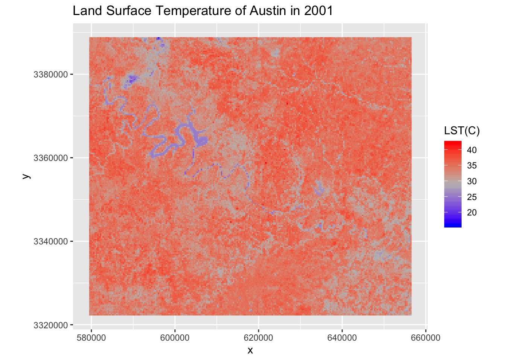
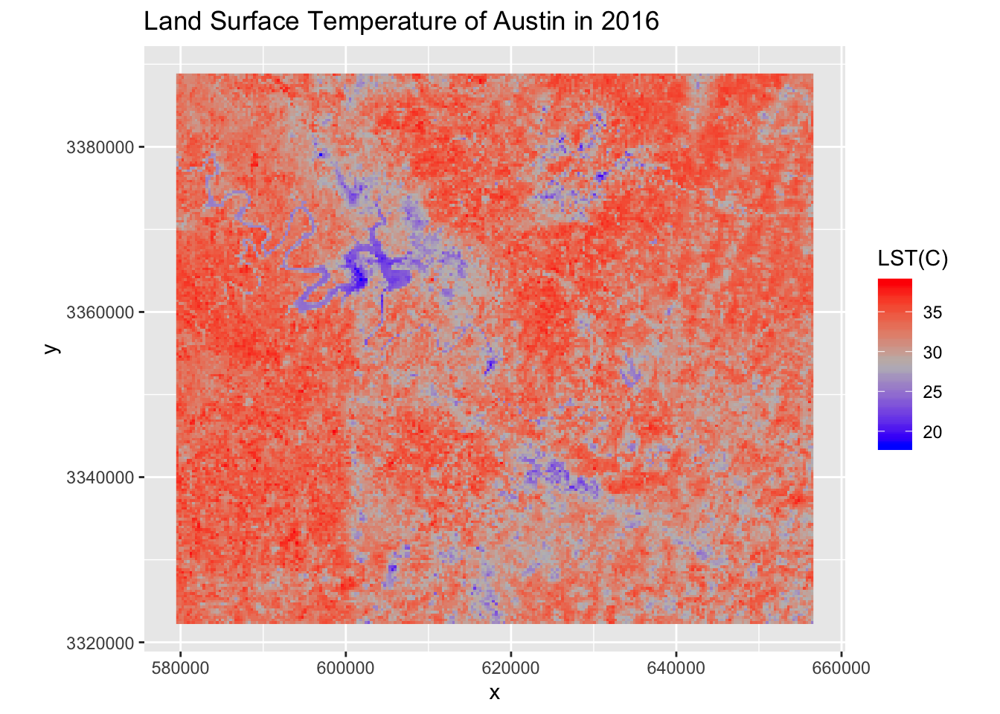

Austin, the capital of Texas State and the seat of Travis County, is the fastest growing large city in the United States and the second most populous state capital after Phoenix, Arizona with a population of almost 1 million (2017). Since the 21st century, more and more high-tech companies have moved to Austin, which has greatly promoted the city’s development and construction. Austin gradually became known as “Silicon Hill”, echoing California’s Silicon Valley. Generally, urbanization transforms the natural land surfaces to modern land use and land cover such as buildings, roads and other impervious surfaces, making urban landscapes fragmented and complex and affecting the inhabitability of cities. The enormous changes with land use/land cover lead to the urban heat island (UHI). In this project, with the help of Landsat image data, the land surface temperature(LST) of Austin respectively for 2001 and 2016 could be retrieved in order to see how they changed in the past 15 years. Furthermore, through combining the LST results with Land use/Land cover(LULC) data of Austin for 2001 and 2016, the impact of Land use/Land cover change on LST in Austin would be analyzed at the pixel scale.
The study area of this project is the entire region of Travis county, including the whole Austin city.
Three Landsat 7 ETM+ images acquired on July 18, 2000, July 21, 2001 and July 24, 2002 are used to calculate the land surface temperature(LST) of 2001, while other three Landsat 7 ETM+ images acquired on August 29, 2015, July 14, 2016 and August 18, 2017 are used to calculate the LST of 2016. Census tract data of Travis county in 2019 is used to restrict the boundry of study area. Land use/Land cover(LULC) data obtained in 2001 and 2016 are respectively used to extract the detailed LULC classes of 2001 and 2016. You can simply use these following codes to download the required data. (Note: You may be asked to log in your Google account when you run the “drive_download” function. Just follow the instruction and you will get the folder called “Data” in your working directory successfully.)
library(googledrive)
drive_download(as_id("1ucJeNsCwoXBQErx-myIxYl9NCCNRbOpw"), overwrite = TRUE)## Using an auto-discovered, cached token.
## To suppress this message, modify your code or options to clearly consent to the use of a cached token.
## See gargle's "Non-interactive auth" vignette for more details:
## https://gargle.r-lib.org/articles/non-interactive-auth.html
## The googledrive package is using a cached token for yliusjz0918@gmail.com.unzip("Data.zip", list = FALSE, overwrite = TRUE)
file.remove("Data.zip")## [1] TRUElibrary(sf)
library(sp)
library(raster)
library(rasterVis)
library(mapview)
library(dplyr)
library(tidyverse)
library(knitr)# read the raw LULC data
LULC_2001 <- raster("Data/LULC/NLCD_2001_Land_Cover_L48_20190424_y1KgWNOUQ2kZkgchVNlH.tiff")
LULC_2016 <- raster("Data/LULC/NLCD_2016_Land_Cover_L48_20190424_y1KgWNOUQ2kZkgchVNlH.tiff")
# read the census tract data of Travis county
Texas_tract <- st_read("Data/Census_Tract/tl_2019_48_tract.shp")## Reading layer `tl_2019_48_tract' from data source `/Users/liuyang/Desktop/GEO 511 R/2019-geo511-project-yliu282/Data/Census_Tract/tl_2019_48_tract.shp' using driver `ESRI Shapefile'
## Simple feature collection with 5265 features and 12 fields
## geometry type: POLYGON
## dimension: XY
## bbox: xmin: -106.6456 ymin: 25.83716 xmax: -93.50804 ymax: 36.5007
## epsg (SRID): 4269
## proj4string: +proj=longlat +ellps=GRS80 +towgs84=0,0,0,0,0,0,0 +no_defsTravis_tract <- Texas_tract %>% filter(COUNTYFP == "453")
# read the Landsat image data
## 2000~2002
B3_00 <- raster("Data/01/2000/B3.TIF")
B4_00 <- raster("Data/01/2000/B4.TIF")
B6_00 <- raster("Data/01/2000/B6.TIF")
B3_01 <- raster("Data/01/2001/B3.TIF")
B4_01 <- raster("Data/01/2001/B4.TIF")
B6_01 <- raster("Data/01/2001/B6.TIF")
B3_02 <- raster("Data/01/2002/B3.TIF")
B4_02 <- raster("Data/01/2002/B4.TIF")
B6_02 <- raster("Data/01/2002/B6.TIF")
## 2015~2017
B3_15 <- raster("Data/16/2015/B3.tif")
B4_15 <- raster("Data/16/2015/B4.tif")
B6_15 <- raster("Data/16/2015/B6.tif")
B3_16 <- raster("Data/16/2016/B3.tif")
B4_16 <- raster("Data/16/2016/B4.tif")
B6_16 <- raster("Data/16/2016/B6.tif")
B3_17 <- raster("Data/16/2017/B3.tif")
B4_17 <- raster("Data/16/2017/B4.tif")
B6_17 <- raster("Data/16/2017/B6.tif")# Transfrom the CRS of census tract data and LULC data to be same as Landsat image data.
crs_Landsat <- crs(B3_00, asText = TRUE)
Travis_tract_crs <- Travis_tract %>% st_transform(crs = crs_Landsat)
LULC_2001_crs <- projectRaster(LULC_2001, crs = crs_Landsat, method = "ngb")
LULC_2016_crs <- projectRaster(LULC_2016, crs = crs_Landsat, method = "ngb")
# Crop the Landsat image data and LULC data based on the extent of Travis county.
clip <- function(x){
raster::crop(x, Travis_tract_crs)
}
LULC_2001_travis <- clip(LULC_2001_crs)
LULC_2016_travis <- clip(LULC_2016_crs)
band_list_01 <- c(B3_00, B4_00, B6_00, B3_01, B4_01, B6_01, B3_02, B4_02, B6_02)
n <- 0
for (band in band_list_01){
n <- n + 1
band_list_01[[n]] <- clip(band)
}
band_list_16 <- c(B3_15, B4_15, B6_15, B3_16, B4_16, B6_16, B3_17, B4_17, B6_17)
k <- 0
for (band in band_list_16){
k <- k + 1
band_list_16[[k]] <- clip(band)
}# Define the calculation function for Landsat 7 ETM+.
calc_lst <- function(b3, b4, b6){
L <- 0.067087*b6 - 0.06709
Tb <- 1282.71/log(666.09/L + 1)
ndvi <- (b4-b3)/(b4+b3)
fv <- ((ndvi-0.05)/0.65)^2
ratio <- 0.985*fv + 0.96*(1-fv) + 0.06*fv*(1-fv)
Ts <- Tb/(1 + (0.000011335*Tb/0.0144)*log(ratio))
Tc <- Ts - 273.15
}
# Calculate the average LST for 2001 and 2016 respectively based on the images of three years.
lst_00 <- calc_lst(band_list_01[[1]], band_list_01[[2]], band_list_01[[3]])
lst_01 <- calc_lst(band_list_01[[4]], band_list_01[[5]], band_list_01[[6]])
lst_02 <- calc_lst(band_list_01[[7]], band_list_01[[8]], band_list_01[[9]])
lst_2001 <- mean(lst_00, lst_01, lst_02, na.rm = TRUE)
lst_15 <- calc_lst(band_list_16[[1]], band_list_16[[2]], band_list_16[[3]])
lst_16 <- calc_lst(band_list_16[[4]], band_list_16[[5]], band_list_16[[6]])
lst_17 <- calc_lst(band_list_16[[7]], band_list_16[[8]], band_list_16[[9]])
lst_2016 <- mean(lst_15, lst_16, lst_17, na.rm = TRUE)Land_Cover_Type = c(
'Water' = 11,
'Water' = 12,
'Urban & built-up' = 21,
'Urban & built-up' = 22,
'Urban & built-up' = 23,
'Urban & built-up' = 24,
'Barren Land' = 31,
'Forest' = 41,
'Forest' = 42,
'Forest' = 43,
'Shrubland & Grassland' = 51,
'Shrubland & Grassland' = 52,
'Shrubland & Grassland' = 71,
'Shrubland & Grassland' = 72,
'Shrubland & Grassland' = 73,
'Shrubland & Grassland' = 74,
'Farmland' = 81,
'Farmland' = 82,
'Wetland' = 90,
'Wetland' = 95)
lcd = data.frame(
ID = Land_Cover_Type,
landcover = names(Land_Cover_Type),
stringsAsFactors = F)
LULC_2001_travis = as.factor(LULC_2001_travis)
levels(LULC_2001_travis) = left_join(levels(LULC_2001_travis)[[1]], lcd)
LULC_2016_travis = as.factor(LULC_2016_travis)
levels(LULC_2016_travis) = left_join(levels(LULC_2016_travis)[[1]], lcd)
LULC_2001_travis_resample <- resample(LULC_2001_travis, lst_2001, method = "ngb")
lcds_01 = cbind.data.frame(
values(lst_2001),
ID=values(LULC_2001_travis_resample[[1]])) %>%
left_join(lcd, by = "ID")
LULC_2016_travis_resample <- resample(LULC_2016_travis, lst_2016, method = "ngb")
lcds_16 = cbind.data.frame(
values(lst_2016),
ID=values(LULC_2016_travis_resample[[1]])) %>%
left_join(lcd, by = "ID")
lcds = cbind(lcds_01, lcds_16) %>% na.omit()
names(lcds) <- c("LST_2001", "lcID_01", "lcType_01", "LST_2016", "lcID_16", "lcType_16")gplot(lst_2001) +
geom_raster(aes(fill = value)) +
scale_fill_gradientn(colors = c("blue", "grey", "red"),
name = "LST(C)") +
coord_equal() +
theme(legend.position = "right") +
labs(title = "Land Surface Temperature of Austin in 2001") ### 2016
gplot(lst_2016) +
geom_raster(aes(fill = value)) +
scale_fill_gradientn(colors = c("blue", "grey", "red"),
name = "LST(C)") +
coord_equal() +
theme(legend.position = "right") +
labs(title = "Land Surface Temperature of Austin in 2016")
lst_diff <- lst_2016 - lst_2001
gplot(lst_diff) +
geom_raster(aes(fill = value)) +
scale_fill_gradient2(low = "blue", high = "red", midpoint = 0,
name = "LST Difference(C)") +
coord_equal() +
theme(legend.position = "right") +
labs(title = "Land Surface Temperature change of Austin between 2001 and 2016")[1]Alberti M, Marzluff J. Ecological resilience in urban ecosystems: linking urban patterns to ecological and human function. Urban Ecosyst2004;7:241-265 [2]Ackerman B.Temporal march of the Chicago heat island. Journal of Climate Applied Meteorology1985;24:547-554. [3]Artis D.A., Carnahan W.H. Survey of emissivity variability in thermography of urban areas. Remote Sensing of Environment1982;12:313-329 [4]Sobrino J.A.,Raissouni N., Li Z.L.A comparative study of land surface emissivity retrieval from NOAA data. Remote Sensing of Environment2001;75:256-266 [5]Valor E. and Caselles V.Mapping land surface emissivity from NDVI: Application to European, African, and South American areas. Remote Sensing of Environment1996;57:167-184